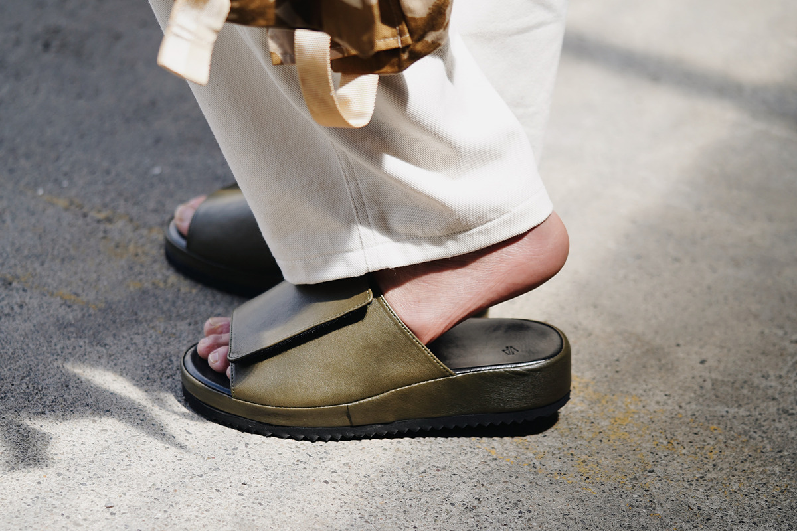
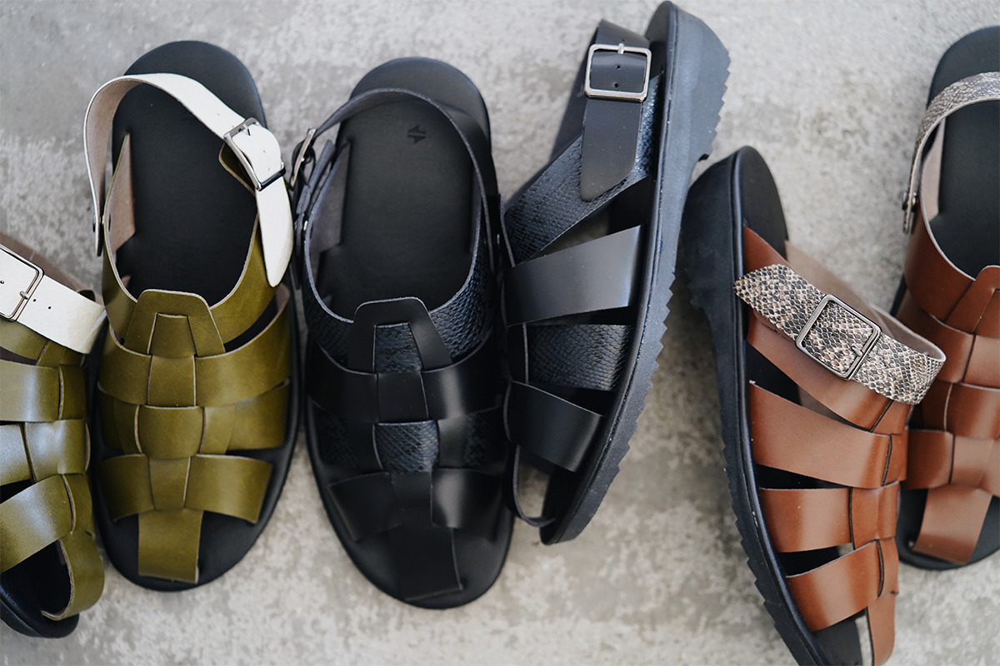
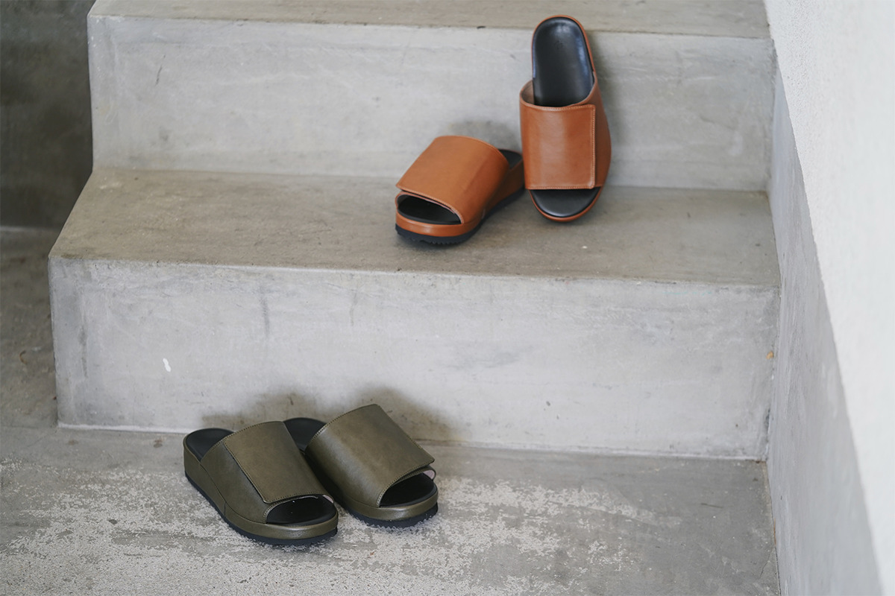
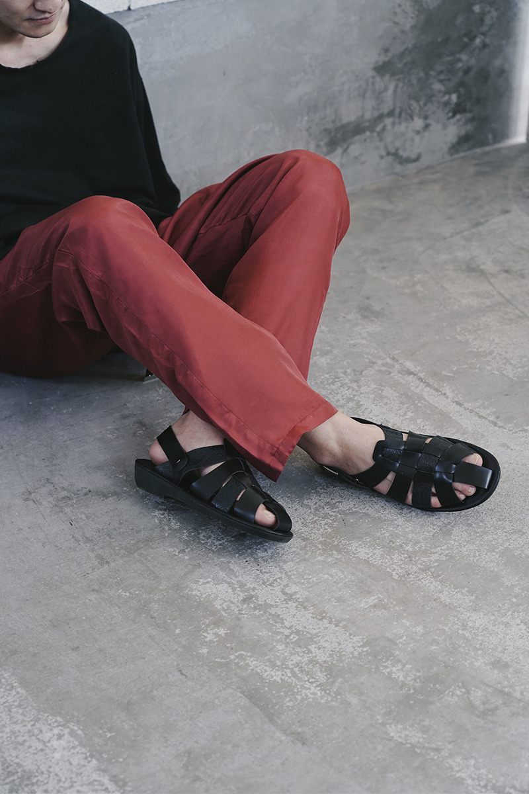
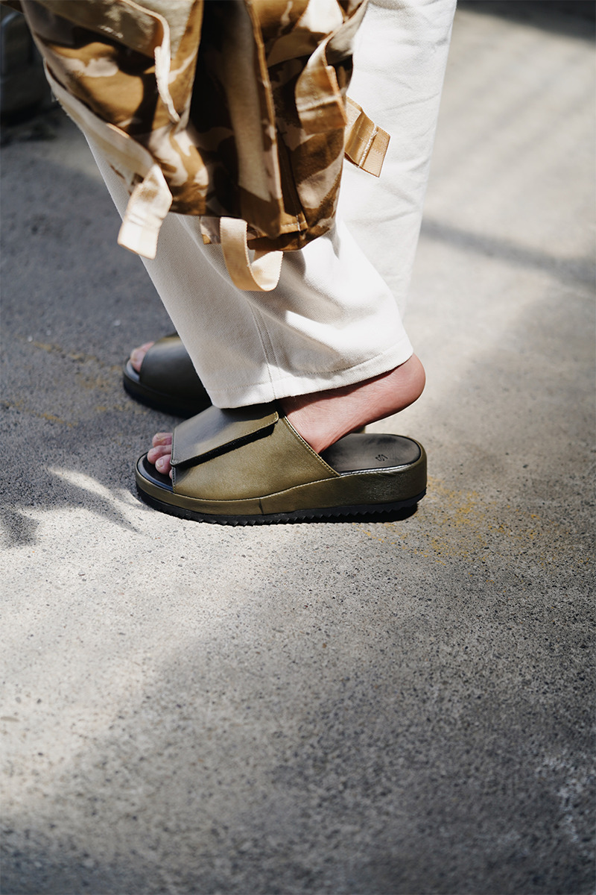
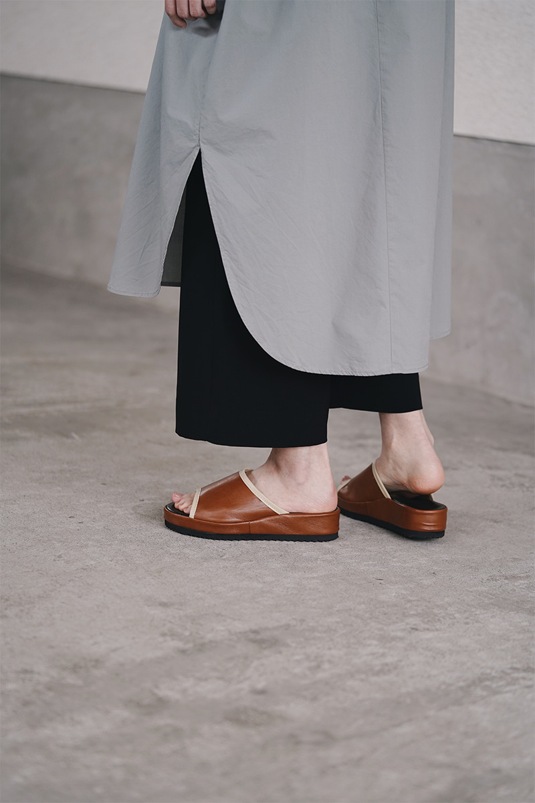
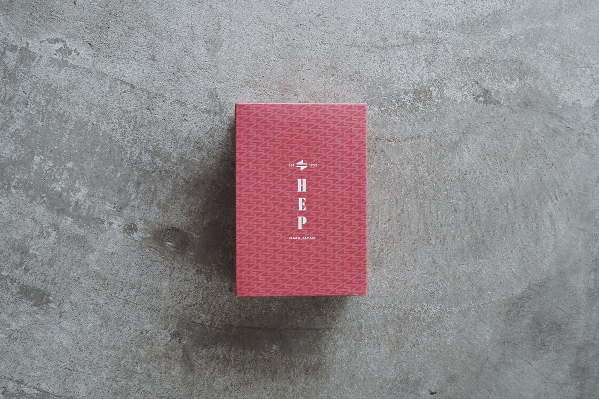

Префектура Нара · Ямато-Такада · ремесло
Сандалии HEP: домашние шлёпанцы из Нары в новом дизайне

В японских прихожих десятилетиями стояли хеп-сандалии: их надевают на ходу, чтобы выскочить за порог. Обувная фирма из префектуры Нара взяла эту скромную обувь и сделала из неё марку HEP с современным дизайном.
История
Шлёпанцы имени Одри Хепбёрн
Хеп-сандалии в Японии знает каждый. Это открытые шлёпанцы без задника, которые надевают, не наклоняясь, чтобы сходить к соседям или вынести мусор. Название, как говорят, пришло из кино: в фильме «Римские каникулы» Одри Хепбёрн носила похожие сандалии, и японцы с нежностью стали звать такую обувь «хеп».

Марка HEP выросла из идеи «новых хеп-сандалий». Её создатели берут обувь, которую японские семьи любили много лет, и переделывают её для нашего времени, меняя форму, материалы и детали.
Ремесло
Обувной край Нары
Префектура Нара одна из главных обувных областей Японии. С первых послевоенных лет здесь делают дзори и сэтта, традиционные сандалии на плоской подошве, а также летнюю обувь и кожаные ботинки.
Семейная фирма Kawahigashi Hakimono Shoten появилась в Наре в 1952 году. Она поставляла материалы местным фабрикам, а ещё сама придумывала, выпускала и продавала обувь. Больше всего сил фирма вкладывала именно в хеп-сандалии.

Для Мунэтоки, наследника фирмы в четвёртом поколении, хеп-сандалии были частью детства. Он уехал из Нары учиться и работать, а в 28 лет вернулся домой и начал помогать в семейном деле. Вместе с отцом он объехал обувщиков префектуры и увидел, что рынок сжимается: край по-прежнему делал обувь, но прежнего оживления уже не было.
Тогда Мунэтоки решил спасти ремесло, на котором вырос, и создать марку хеп-сандалий, которая покажет эту обувь по-новому. Поначалу вокруг звучали почти одни сомнения, но он не отступил.
«С 2018 года мы около двух лет продумывали марку, а в 2020 году запустили HEP. По сравнению с тем временем, когда я только пришёл в семейное дело, настроение на фабриках заметно изменилось. Нам предлагают новые модели, весной и летом приходят крупные заказы, и мастера готовы помогать ради HEP»
Мунэтоки, четвёртый глава Kawahigashi Hakimono Shoten
В сандалиях HEP соединились колодка, которая за десятилетия подстроилась под стопу японцев, и современный дизайн. Вот три модели марки.
DRV
Сандалии для водителя

DRV была одной из самых популярных моделей с самого запуска марки в 2020 году. Её прообраз это «драйвинг-сандалии», которые японские водители носили много лет. В новой версии появились цвета старых хеп-сандалий и вставка с узором под кожу питона. Собственная подошва удобна для педалей, а ремешок можно носить двумя способами.
В 2021 году DRV стоила 11 000 иен с налогом. Цвета: хаки, коричневый и чёрный с тёмно-синим, а в фирменном интернет-магазине продавались ещё однотонные хаки и коричневый. Размеры от S (23–24 см) до 3L (27–28 см), модель унисекс.
GNK
Сандалии на липучке

GNK сохраняет узнаваемый вид хеп-сандалий. Верх застёгивается на липучку, поэтому высоту над подъёмом стопы можно настроить. Внутри стельки спрятана пяточная чашка, как у модели JMS, а подошва сделана из лёгкого материала EVA.
В 2021 году GNK стоила 9460 иен с налогом. Цвета: хаки и коричневый, размеры от S (23–24 см) до LL (26–27 см), модель унисекс.
JMS
Сандалии по мотивам «оздоровительных»

Модель JMS вышла в 2021 году. Её прообраз это «оздоровительные сандалии» с округлой, немного старомодной формой, которые многие японцы помнят по дому бабушки. В стельку встроена чашка, которая обхватывает пятку, поэтому шаг и стойка становятся устойчивее.
Подошва из EVA появилась у HEP впервые именно здесь. Её делает фабрика резиновых изделий в Кобе, которая много лет выпускает подошвы для обуви. Она хорошо держит поверхность и при этом лёгкая.
В 2021 году JMS стоила 9020 иен с налогом. Цвета: хаки, коричневый и чёрный, размеры от S (23–24 см) до LL (26–27 см), модель унисекс.
Упаковка
Коробка для подарка

Сандалии HEP приходят в красной коробке с рисунком по мотивам логотипа марки. Такую пару не стыдно подарить. А сами сандалии годятся и чтобы выйти за порог, и чтобы отправиться в город.
В Наре сандалии HEP можно примерить в фирменном магазине «Хеп-ленд» в Ямато-Такаде, там же, где работает сама компания. Здесь собрана вся линейка марки.
Фирменный магазин HEP «Хеп-ленд»
- Адрес
- префектура Нара, Ямато-Такада, Акэбоно-тё, 15-33
- Часы работы
- 13:00–17:00 в дни работы по календарю на сайте (иногда до 16:00); в остальные дни по записи через Instagram
- Как добраться
- около 13 минут пешком от станции JR Такада
- Сайт
- hep-sandal.jp